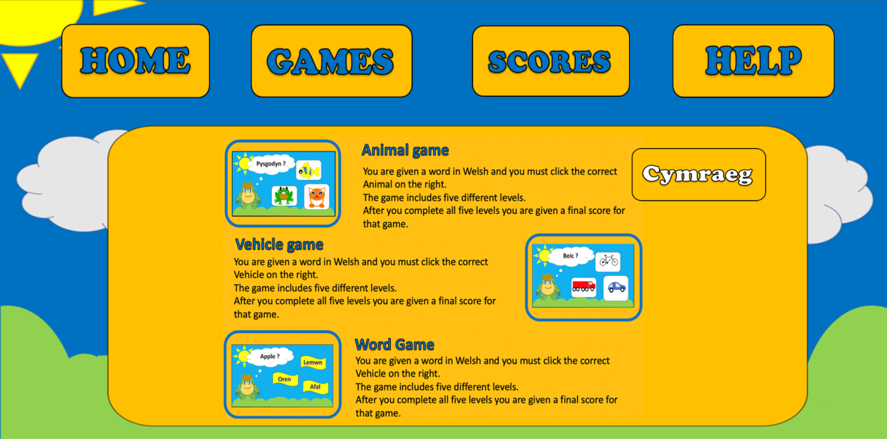

Welsh game for children
For my final year project during university, I was given the task to create a website for a client. Although I didn’t have a specific client, I had a family member who works at a school and they noticed that the children were starting to use their iPad/tablets more for reading and learning. As welsh is one of my first languages, I decided to create a website which could help young children learn welsh. I wanted my website to include bright colours and pictures to draw the user’s attention and to make the experience playful and fun for the user.
How to play a level
All three of the games playable on the site currently function the same.
The user is given a question in Welsh and they have to pic the correct corresponding image/word to gain points.
[picture of a game mid-level]
Home screen
The home screen works also works as a help page. It includes a screenshot of each of the three games playable on the site along with a short paragraph describing how the games work. Using an on-screen button, it is possible to change the language used from English to Welsh or vice versa. 
Problems faced and solutions given
My original plan was to give the user the ability to save and view their score that they got for the games.
I would have done this by building a form using HTML and Javascript and saving the score using Ajax and SQL and reading the score back using Ajax and SQL.
However, due to the time constraints of the project I was unable to get a working score system.
Since completing the project at university I have decided to revisit it from a different approach. As I have mentioned previously, since graduating I started working on my own games using unity. While working with a scoring system for a different game, I realised it would also work with this game.
Turning the website into a game using unity.
As I had all the assets needed to create the game already, it was very simple to create a small test of how the game would work coded in unity. As of writing this, I have created three levels from the animal game featured on the site. It was very simple to implement it into unity and I will continue working on the game until it is complete. (click on the image below to watch the game in action)